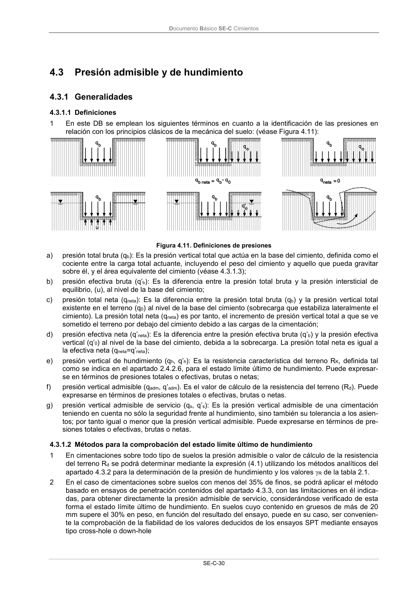

DB-SE-C Cimientos · edición 2019-12-20 · capa oficial
Documento DB-SE-C-oficial · SHA-256 del PDF a71133f4b0dca253e45ea3071c70f2a512354bcc5cd841bf89b1a502f567ac5e
Copia fiel del PDF fuente · Fuente oficial
Ficha de la disposición en la fuente oficial
Formatos: JSON del segmento · Markdown
4.3.1.2 Métodos para la comprobación del estado límite último de hundimiento 1 En cimentaciones sobre todo tipo de suelos la presión admisible o valor de cálculo de la resistencia del terreno Rd se podrá determinar mediante la expresión (4.1) utilizando los métodos analíticos del apartado 4.3.2 para la determinación de la presión de hundimiento y los valores R de la tabla 2.1. 2 En el caso de cimentaciones sobre suelos con menos del 35% de finos, se podrá aplicar el método basado en ensayos de penetración contenidos del apartado 4.3.3, con las limitaciones en él indica- das, para obtener directamente la presión admisible de servicio, considerándose verificado de esta forma el estado límite último de hundimiento. En suelos cuyo contenido en gruesos de más de 20 mm supere el 30% en peso, en función del resultado del ensayo, puede en su caso, ser convenien- te la comprobación de la fiabilidad de los valores deducidos de los ensayos SPT mediante ensayos tipo cross-hole o down-hole Documento Básico SE-C Cimientos SE-C-31 3 En el caso de cimentaciones en roca se podrá aplicar el contenido del apartado 4.3.4 para obtener directamente la carga admisible, considerándose comprobado de esta forma el estado límite último de hundimiento.
